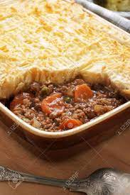

Cottage pie

Description
A scrumptuous cottage pie with hearty beef and crumbly potatoes
Ingredients
- 500g ground beef
- 1.5kg potatoes
- 100 ml heavy cream
- Gravy capsules
- Peas
- Salt
- Pepper
- Oil of choice
Steps
- Peel the potatoes, rinse and put start boiling; salt to taste
- Start preparing beef, preferably using our delicious taco meat recipe
- Once the potatoes are soft throughout, drain the water, add cream and mash
- Preheat the oven to 200°C
- Place fried meat on a baking tray and spread evenly
- Drain and add peas
- Prepare a cup of gravy according to instructions on the packaging and pour it on top of meat
- Add and spread the potates
- Place the tray in the oven
- Bake for 40 minutes or until the top of the potatoes turns light-brown